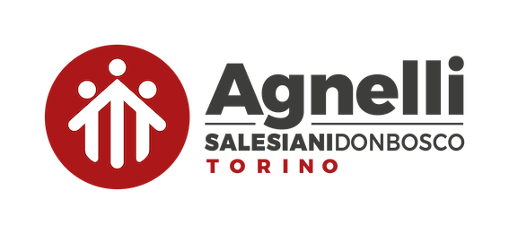

Salve sono Davide Emanuel,nato a Torino il 06/10/2005 e ho frequentato per 3 anni l'Istituto tecnico Amedeo Avogadro in corso San Maurizio 8. Ora frequento l'Istituto internazionale Edoardo Agnelli in corso Unione Sovietica 312. In questo portfolio ci saranno tutti i lavori svolti e gli argomenti trattati di educazione civica.

Argomenti
Esempio argomento 1
Vai all'argoemnto